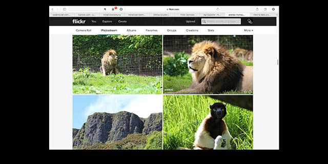
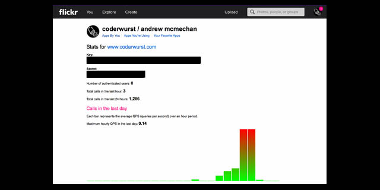
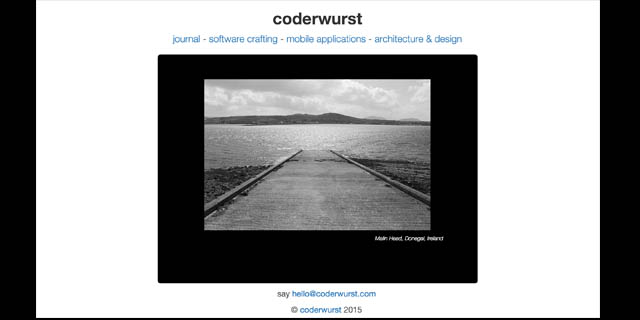

coderwurst
software crafting
flickr api
After a few years in the wilderness Yahoo got their act together 2015 in May and gave flickr a proper make-over, giving the photo sharing site a much needed new lease of life. Since giving the new flickr a go earlier this year, I can't sing its praises high enough. Even without a pro membership, the website/ app provides an excellent platform for storing photos, getting inspired and networking with other amateur, semi-professional and professional enthusiasts.

flickr api
Getting an API key couldn't be easier - click here to be taken to the main 'create api' screen and follow the on screen instructions for getting a non-commercial or commercial licence. You will have to enter the app/ website name to be used with the key, and a short description of how the api is to be used. After completing these steps you should see the following screen with your key info.

The api contains a vast number of methods, all of which can be seen here on the api services page. I am going to go into more detail regarding the getPhotos functionality, which I utilised to transfer a selection of my own collection into the carousel on the landing page of coderwurst.com.
flickr.photosets.getPhotos
There are a good selection of carousel templates out there to use as a starting point when building such a feature into your website. Slick from Ken Wheeler is very neat, and everything is well documented over on Github. As my site was developed in Bootstrap, to maintain responsiveness without unnecessary complicating the codebase I went with the bootstrap carousel. The implementation of this carousel took seconds, as I had all the js and css already in my web package. All I did was add the necessary divs to my jumbotron on the home page, and loaded up a few photos to make sure everything was working. There are already plenty of tutorials online to cover this. Where it gets interesting is when trying to plug in the flickr api...
I started with a jQuery plugin created by @jguadagno which can be found on Github. This uses a the flickr.photos.search methods to return a specified number of photos matching a particular search term. NB: the exact search terms set up on Github are no longer in use, so you need to search for some other tags to see if this is working! This jQuery plugin also includes methods for getting the photo info (description) and setting the carousel up with navigational arrows and pagination elements. I stripped these nav options out as I really only wanted the images to show in the background. After adding this plugin and getting it working with my landing page, I was able to get into the fun part - modifing the plugin code to work using the getPhotos method to retrieve photos from my collection.
The plugin uses JSON to commuicate with flickr:
$.getJSON(this.settings.flickrApiUrl, {
method: "flickr.photos.search",
api_key: this.settings.flickrApiKey,
tags: this.settings.tagsToSearchFor,
per_page: this.settings.imagesPerPage,
page: pageNumber,
format: "json",
nojsoncallback: "1"
}).done(...)and the settings are stored as defaults as follows:
$.fn.twbsFlickrCarousel.defaults = {
flickrApiKey: 'YOUR API KEY',
flickrApiUrl: 'https://api.flickr.com/services/rest/',
tagsToSearchFor: 'some, example, tags',
width: '600',
height: '600',
imagesPerPage: 10,
pageNumber: 1,
flickrSizeSuffix: 'z',
flickrImageType: 'jpg',
paginationSelector: '#flickr-pagination',
paginationClass: 'pagination',
onPageClick: null,
onLoadError: null
};After a quick look at the api documentation, it is possible to identify what each of these components mean. We can then update the above code so that we are calling for a specific photo search, using our details:
$.getJSON(this.settings.flickrApiUrl, {
method: "flickr.photosets.getPhotos", // new method
api_key: this.settings.flickrApiKey,
tags: this.settings.tagsToSearchFor,
per_page: this.settings.imagesPerPage,
page: pageNumber,
format: "json",
nojsoncallback: "1"
}).done(...)
$.fn.twbsFlickrCarousel.defaults = {
flickrApiKey: 'YOUR API KEY',
flickrApiUrl: 'https://api.flickr.com/services/rest/',
photosetId: 'YOUR ALBUM ID',
userId:'YOUR USER ID',
perPage: '15',
page: '1',
privacyFilter: '1',
imagesPerPage: '15',
pageNumber: 1,
wrap: "true"
};
$('#flickr-carousel').twbsFlickrCarousel(
{
flickrApiKey: 'YOUR API KEY',
}With the updated JSON call it is now possible to pull your photos into your website. The album ID can be found at the end of the url used to access your albums on flickr. For example, https://www.flickr.com/photos/username/albums/00000, then 00000 is your album id. The user id can be found on the App Garden page accessed on the documentation page for the getPhotos method. On the right of the screen, a list of useful IDs are shown, including amongst other things recent photoset ids and group ids. Here it is also possible to do a test run of your JSON call by filling out the information you are trying to request, and viewing the response from flickr. If the call does not work, an error message will be shown which will hopefully help you to work out what went wrong. If you successfully see items being returned, then you can check the URL code displayed on the bottom of the screen with your JSON message, and determine any inconsistencies. Note that the API key will be different on this screen from the one you have generated , and api_sign it adds onto the end of the url is also not needed for use with your JSON script.
coderwurst landing page before
coderwurst landing page v1.1
I spent in total 6 hours (including much procrastination as to what photos I should include on my website) in implementing the steps outlined above. I think it was time well spent, upgrading my home page from a static, empty space to something that will dynamically update as I add photos to my flickr account - now to go do some snapping!